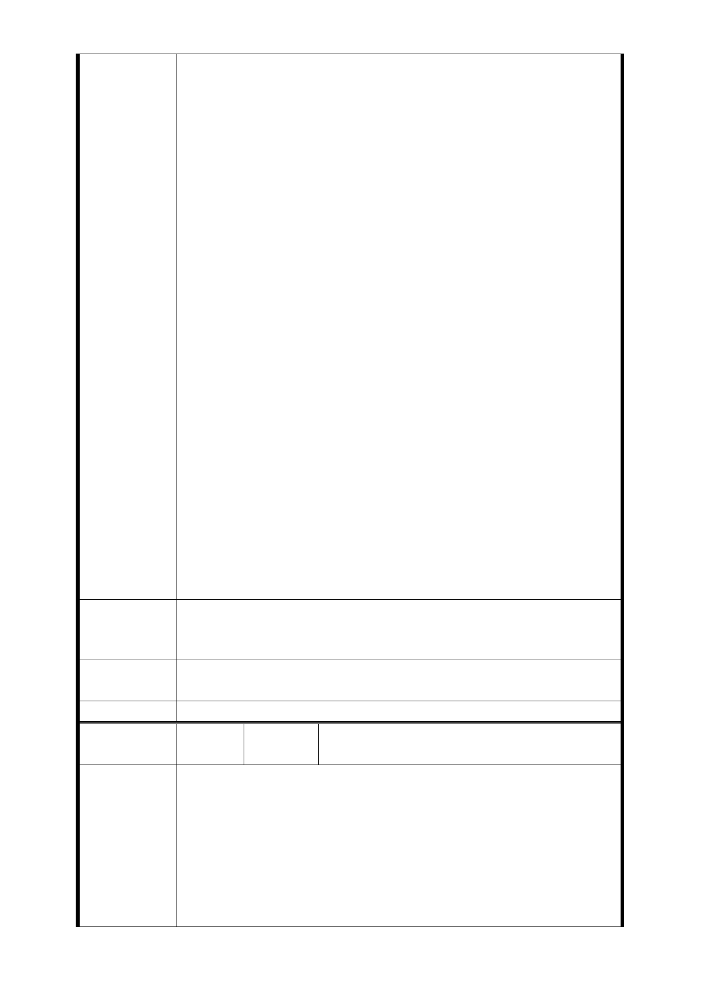

土地早已於 99 年 6 月 11 日就禁建二年，事後本人向貴局反
映為何當時未以公文書通知地主即逕行劃定實施，貴局卻推
說該計劃衹有在電腦上公告，毋需通知地主，這理由讓人無
法接受，本人也不會電腦，又有誰會一天到晚上網看政府公
告資料，這攸關人民財產權益問題政府豈可如此草率便宜行
事，而本人蒙受幾千萬損失國家又將如何賠償呢？
再者貴局於 100 年 12 月 2 日下午六時 30 分假萬大國小召開
都市計畫變更前說明會貴局竟未通知全體地主（僅通知少數
人），本人是於事後經由鄰居告知才獲悉此事。此次貴局擬就
都市計畫辦理變更將直接影響本人及當地居民產財權甚鉅，
未料貴局竟草率作業未以公文書通知全體地主，實有行政疏
失，黑箱作業之實。
政府常以台灣是自由民主法制國家享譽國際而自豪，而此次
為了北市捷運萬大－中和－樹林線擬變更都市計畫卻以官逼
民方式草率、強制辦理，實為民主之恥。依法大眾捷運依擇
其對土地及其土地改良物之所有人，占有人或使用人損害最
少之處所及方法為之，LG04（捷八）站原預定於萬大國小，
但不知理由為何？貴局竟推翻原預定地，改採與立法精神相
背讓人民受最大損失的 29 筆私有土地作（捷八）捷運站出口
，其背後究竟牽扯多少利益，實著讓人有不少聯想。在全體
經濟景氣衰退，歐債危機下，國內企業放無薪假情形日趨嚴
重，失業率履創新高情況下，政府您選擇 LG04（捷八）站私
有土地蓋捷運站出入口，無非是逼現有店面經營者結束營業
遣散勞工，而這樣的作法與政府呼籲企業要共體時艱不要任
意放無薪假，要創造勞工就業機會的作法，實為說一套、作
一套，其背後又有多少家庭生計會因您一時錯誤的計畫而陷
入危機。
在這高房價、收入漸縮的時代，當地居民實在沒有能力再找
建 議 辦 法 一個棲身之所，請政府勿漠視人民的心聲輕率變更都市計畫
，甚為感激。
市府回應
意見
同編號捷八－1 回應意見。
委員會決議 同編號交一－1 委員會決議。
編
號 捷八-6
陳情人
捷運萬大線 LG04（捷八）自救會會長洪
○壽暨陳情人共 53 位
主旨：捷運萬大線 LG04 車站位置規劃草率，枉顧民意、侵
害人權，居民一致反對並強烈要求變更設站位置，詳如說明
，請查照。
陳情理由
說明：
一、台北市政府在 94 年 6 場說明會所提，及於全球資訊網自
94 年迄今所公告資訊，捷運萬大線公告路線圖預定設置點及
路線說明，沿線 LG01 車站為羅斯福路與南海路口、LG02 車
站為南海路與和平路口、LG03 車站萬大路與西藏路口）均明
- 133 -